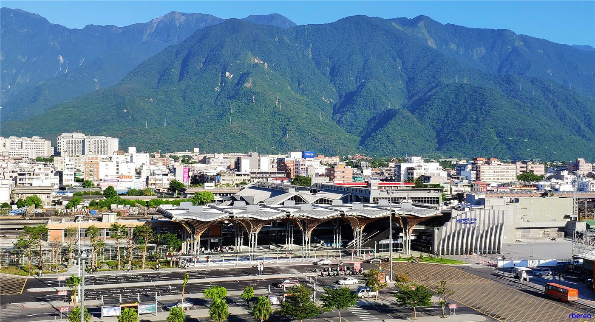

외딴 시골 고교생의 꿈을 함께… 화롄공고 왕차오윈, 사탁상 수상
대만 화롄(花蓮)의 한 공업고 교사가 외딴 지역 학생들의 꿈 찾기를 도운 공로로 사탁상(師鐸獎)을 받았다. 교육 소외 지역에서 이어온 헌신이 인정받았다.
진태흥 기자 · 2026.07.22
橋대만

화롄공고 왕차오윈(王巧雲) 교사가 사탁상을 받았다고 대만 자유시보가 전했다. 외딴 시골 고교생의 진로 탐색을 곁에서 도와온 점이 높이 평가됐다.
광고 문의 · 300×250사탁상은 대만에서 교육에 헌신한 교사에게 주는 상이다. 도시에 비해 자원이 부족한 외딴 지역에서 학생 한 명 한 명의 진로를 함께 고민하는 일은, 눈에 잘 띄지 않지만 삶을 바꾸는 교육의 본령으로 꼽힌다.
교육 격차는 지역과 계층에 따라 벌어지기 쉽다. 이런 격차를 메우는 힘은 결국 현장의 교사에게서 나온다는 점에서, 외딴 지역 교사의 헌신은 사회적 의미가 크다.
학생의 꿈을 함께 찾는 교육은 단기 성적을 넘어 자립과 자신감을 길러 준다. 수상은 그런 묵묵한 노력에 사회가 보내는 인정으로 볼 수 있다.
華橋時報는 국적과 지역을 넘어, 아이들이 배우고 성장할 권리를 지켜 주는 교육자의 헌신을 소중히 여긴다. 다문화·화교 학교 현장의 교사들에게도 이런 이야기는 큰 울림을 준다.
출처·참고 (사실 확인용 — 본문은 직접 재작성)
· 自由時報
· 自由時報